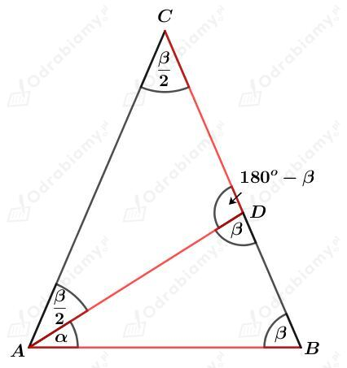
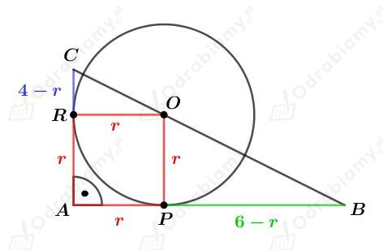
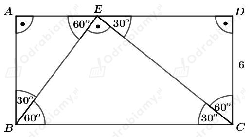
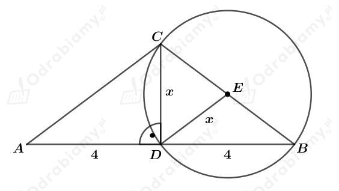
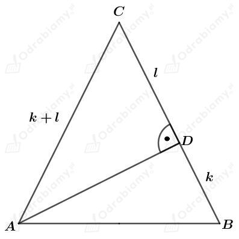
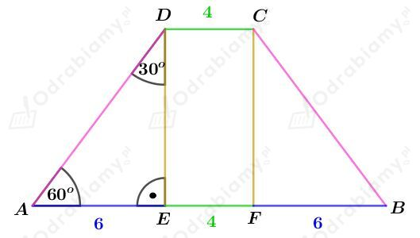
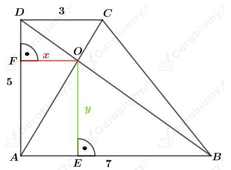
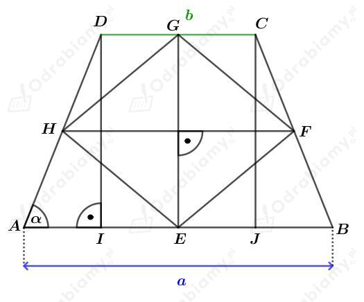

Rysunek:

Komentarze do rysunku:
Wiemy, że |AB|=|AD|=|CD|.
Niech
Trójkąt ABD jest trójkątem równoramiennym, bo |AB|=|AD|, więc
zatem
Trójkąt ADC jest trójkątem równoramiennym, bo |AD|=|DC|, więc
Trójkąt ABC jest trójkątem równoramiennym, więc
Rozważmy sumę miar kątów w trójkącie ABC. Mamy:
czyli
Podsumowując, otrzymaliśmy:
Odp. Kąty trójkąta ABC mają miary 72o, 72o, 36o.
Rysunek:

Zauważmy, że na podstawie cechy KKK, trójkąty ABC i PBO są podobne. Mamy stąd:
Rysunek:

Na boku AD obraliśmy punkt E w sposób taki, że trójkąty ABE, DEC i EBC są podobne.
Rozważmy trójkąt CDE. Korzystając ze związku między długościami boków w trójkącie o kątach 30o, 60o, 90o mamy:
oraz
Wyznaczmy skalę podobieństwa trójkąta ABE do trójkąta DEC. Mamy:
Wyznaczmy skalę podobieństwa trójkąta DEC do trójkąta EBC. Mamy:
Wyznaczmy skalę podobieństwa trójkąta ABE do trójkąta EBC. Mamy:
Rozważmy trójkąt BEC. Korzystając ze związku między długościami boków w trójkącie o kątach 30o, 60o, 90o mamy:
Wyznaczmy pole trójkąta BEC. Mamy:
Rysunek:

Na trójkącie prostokątnym DBC opisaliśmy okrąg. Odcinki DE, CE i EB są promieniami tego okręgu, więc
czyli
Korzystając z twierdzenia Pitagorasa dla trójkąta DBC mamy:
Obliczmy długość ramienia trójkąta ABC. Mamy:
Obliczmy pole trójkąta ABC. Mamy:
Dany jest trójkąt ABC, którego rysunek przedstawiono w podręczniku.
Czworokąt CEDF jest rombem. Niech x będzie długością jego boku.
Niech
i wtedy
Obliczmy pole trójkąta ABC. Mamy:
Obliczmy pole trójkąta AFD. Mamy:
Obliczmy pole trójkąta DEB. Mamy:
Obliczmy pole rombu CEDF. Mamy:
Wiedząc, że
mamy:
Rysunek:

Korzystając z twierdzenia Pitagorasa dla trójkąta ADC otrzymujemy:
Korzystając z twierdzenia Pitagorasa dla trójkąta ABD0 otrzymujemy:
Dany jest trapez równoramienny.
Niech 𝛼 będzie kątem przy dłuższej podstawie tego trapezu. Kąt przy krótszej podstawie ma miarę dwa razy większą, czyli ma miarę 2𝛼.
Mamy stąd:
Niech a będzie długością krótszej podstawy tego trapezu. Dłuższa podstawa tego trapezu ma długość 16 cm.
Wiedząc, że odcinek łączący środki ramion tego trapezu ma długość 10 cm mamy:
Rysunek:

Rozważmy trójkąt prostokątny AED. Korzystając ze związku między długościami boków w trójkącie o kątach 30o, 60o, 90o mamy:
oraz
Obliczmy obwód tego trapezu. Mamy:
Obliczmy pole tego trapezu. Mamy:
Rysunek:

Zauważmy, że na podstawie cechy KKK, trójkąty DFO i OEB są podobne. Mamy stąd:
Zauważmy, że na podstawie cechy KKK, trójkąty DCO i ABO są podobne. Mamy stąd:
czyli
Odp. Odległość punktu przecięcia przekątnych do dłuższej podstawy wynosi 3,5 cm, a do ramienia wynosi 2,1 cm.
Rysunek:

Odcinek HF jest odcinkiem łączącym środki ramion tego trapezu, więc
Zauważmy również, że
Rozważmy trójkąt AID. Korzystając z funkcji tangens dla kąta 𝛼 mamy:
Wyznaczmy pole czworokąta EFGH. Mamy: